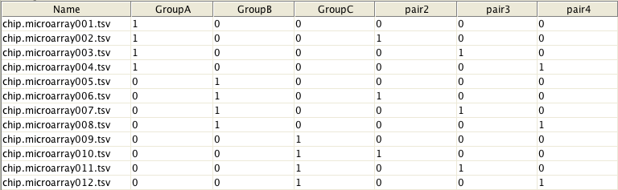

Statistical testing using linear modelling and user-defined design-matrices.
This tool integrates linear modelling to Chipster as implemented in the limma package. Statistical testing is done using a limma-kind of design matrix alone, if designed to account for coefficients, or using the design-matrix and contrasts stating which coefficients are to be estimated. NOTE: you need to select both the file with the expressions and the file with the design matrix, which is done by holding down the Control key while mousing over the files in the "Datasets" or "Workflow" windows.
In order to use this tool, you need to have a design-matrix of the microarray experiment with rows corresponding to arrays and columns to coefficients/sample-classes to be estimated. For example, the matrix below shows that arrays from 1 to 4 belong to GroupA and arrays from 5 to 8 to GroupB, etc. In addition, it states that arrays #1, #5 and #9 as well as arrays #2, #6 and #10, etc form blocks, i.e. were from the same individual. Please note that when defining blocks, the design matrix should contain one block-group less than there are real groups. For more help about the how to make a desing matrix, please consult limma user-manual.
The contrast parameter constructs a contrast matrix corresponding to specified contrasts of a set of parameters. For example, if your design matrix includes four groups (GroupA, GroupB, GroupC and GroupD), you may use contrast parameter to restrict statistical testing to only include comparisons between GroupA and GroupB as well as between GroupC and GroupD. This is done by setting the parameter to GroupA-GroupB,GroupC-GroupD. Please note that levels defined here must match the coefficients/sample-classes given in the design matrix.
The parameter technical replication allows you to specify which samples are technical replicates (the same RNA hybridized on different chips), and it is treated in a special way in the linear models (using a mixed model). Information indicating which samples are technical replicates is read from the given phenodata column
Three tab-delimited text files are output as a result of the analysis. The "p.values.tsv" table lists the p-values for tested contrasts, the factor level being reflected in the column headers. For example, a column labeled "chip.p.adjusted.X-Y.tsv" refers to the comparison of level X to level Y. The "foldchange.tsv" table holds the corresponding fold changes. Fold change values are essentially the log2 of the ratio between the averaged expression values of samples for the first factor level and the second factor level. The "limma.tsv" table combines the p-values and fold changes results, together with the expression values and annotation information for the probes tested, in a convenient summary table that is suitable for further processing or analysis.
This tool uses Bioconductor package limma. Please cite the following articles:
Smyth, G. K. (2004). Linear models and empirical Bayes methods for assessing differential expression in microarray experiments. Statistical Applications in Ge- netics and Molecular Biology, Vol. 3, No. 1, Article 3.
Smyth, G. K., Michaud, J., and Scott, H. (2005). The use of within-array replicate spots for assessing differential expression in microarray experiments. Bioinformatics 21(9), 2067-2075.